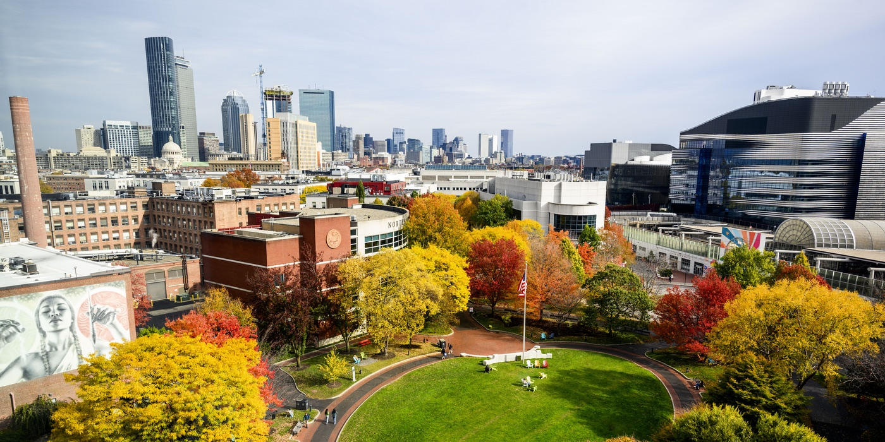

- Huaizu [& co-hosts?]
Academic researchers:
Participation is free for all researchers at academic institutions. Please register [registration link TBD] and submit your abstract [submission link TBD].
Industry participants:
For our industry friends, a limited number of registrations are available for a fee. Please register [industry registration link TBD].
Deadlines: Early-bird registration ([lunch / parking provided?]) by [Month DD]. Please submit your abstract by [Month DD]. Oral decisions will be released by [Month DD].
Submission guidelines:
Please submit a one-page PDF abstract using the CVPR 2026 rebuttal template [switch to the CVPR 2027 template once released].
Please include the title of your work and the list of authors in the abstract.
You may present work that has already been published or work that is in progress.
All relevant submissions will be granted a poster presentation,
and selected submissions from each institution will be granted 12-minute oral presentations.
Post-docs and faculty may submit for poster presentations, but oral presentations are reserved for graduate students.
There will be no publications resulting from the workshop,
so presentations will not be considered "prior peer-reviewed work" according to any definition we are aware of.
Thus, work presented at NECV can be subsequently submitted to other venues without citation.
The workshop is after the CVPR submission deadline, so come and show off your new work in a friendly environment.
It's also just before the NeurIPS conference, so feel free to come and practice your presentation.
Oral presentation: Each presentation is allocated a 12-minute slot, with an additional 3 minutes dedicated to questions and the change of speaker. We request all presenters to bring their own laptop for their presentation.
Poster presentation: The poster session will be held in [Room, Building]. Your assigned poster ID can be found on this website. Please locate the correct poster board to display your poster. These boards can accommodate up to [W" x H"] posters (width x height). You are welcome to use any format within that size limit.
The workshop will be held in [Room, Building (Google Maps link)], Northeastern University, Boston, MA.
[Parking and public transit (MBTA) information TBD]
[Sponsor logos TBD]
Host: Huaizu Jiang [and co-hosts?].
Program committee: [TBD]
Logistics committee: [TBD]
Corporate relations chair: [TBD]
Website chair: [TBD]
Steering committee: Erik Learned-Miller (UMass Amherst), Kate Saenko (Boston University), Yun (Raymond) Fu (Northeastern University), Octavia Camps (Northeastern University), Todd Zickler (Harvard), James Tompkin (Brown), Benjamin Kimia (Brown), Phillip Isola (MIT), Pulkit Agrawal (MIT), SouYoung Jin (Dartmouth), Adithya Pediredla (Dartmouth), Yu-Wing Tai (Dartmouth), and Alex Wong (Yale). [Carried over from 2025, please confirm]